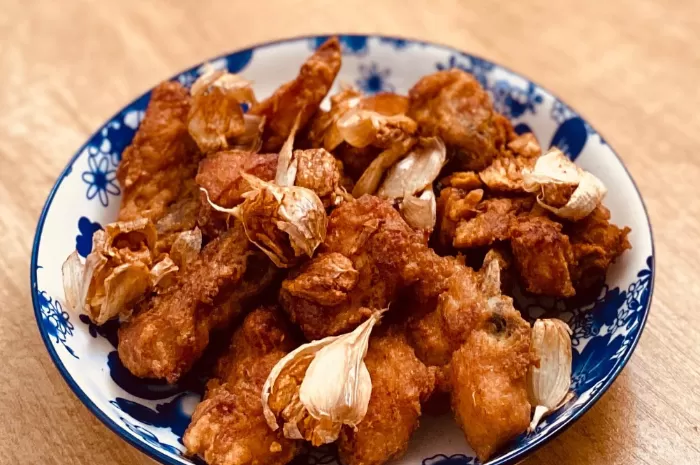

Back
Ayam Bawang Putih It's Fryday

Ayam Bawang Putih Goreng It's Fryday's
Merupakan sebuah resep yang ditemukan oleh It's Fryday seorang public figure tiktok yang sering membagikan resep-resep makanan enak. Sesuai dengan namanya, ayam goreng bawang putih ini menggunakan bahan utama nya bawang putih yang memberikan rasa umami kuat dari bawang putih. Keunikan dari kombinasi simple ini membuat orang menjadi tertarik dan penasaran sehingga banyak yang ingin mencoba membuatnya.
Berikut ini adalah resepnya :
Bahan:
- 500 gram ayam potong
- 10 siung bawang putih utuh (geprek)
- 70 gram tepung tapioka
- Minyak goreng secukupnya
Bahan Marinasi :
- 5 siung bawang putih (haluskan)
- 1 sdt kaldu bubuk
- 2 sdt bawang putih bubuk
- 1/2 sdt garam
- 1/2 sdt merica
- 2 buah perasan jeruk nipis
- 50ml air
Bahan Saus :
- 3 sdm mentega/margarin
- 3 sdm saus sambal
- 4 sdm saus bangkok
- 1 sdt bawang putih bubuk
- 1-2 sdt bubuk cabai
- 1-2 sdm madu
- 1-3 siung bawang putih (goreng cincang)
- 100-150 ml air
Cara Membuat :
- Tusuk-tusuk ayam dengan garpu, lalu campur dengan bahan marinasi.
- Aduk hingga merata, tutup ayam yang sudah dimarinasi dan simpan dalam kulkas semalaman atau minimal 1 jam.
- Goreng ayam dalam minyak panas dengan api kecil selama 10-15 menit.
- Untuk membuat saus, panaskan margarin lalu campurkan semua bahan saus. Masak hingga matang.
- Sajikan ayam goreng bawang putih bersama saus.